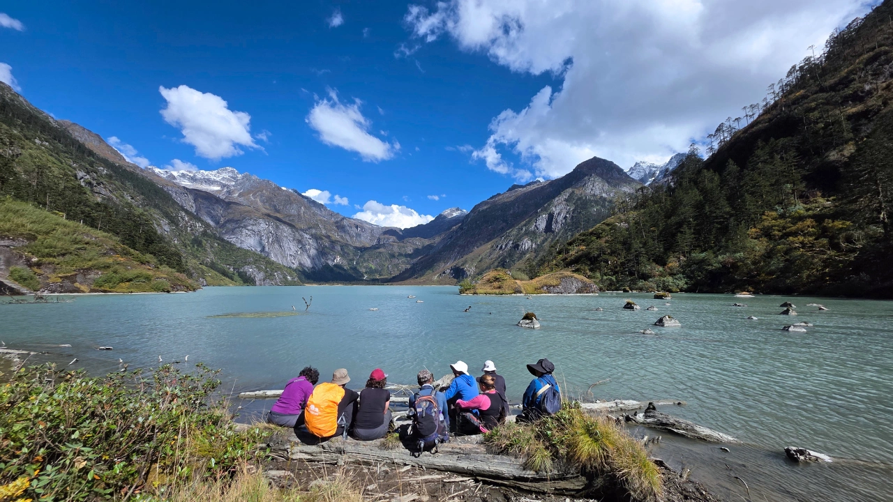
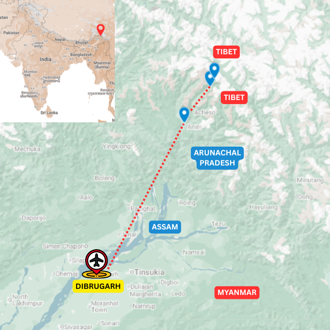

Overview
A quieter trek into Arunachal's mountain valleys
The Aeyo Valley Trek is built for travellers who want a more remote walking route in Arunachal Pradesh, away from the usual circuit.
The journey moves through mountain villages, forest trails, river valleys and highland landscapes shaped by weather, altitude and local life.
This is the easternmost organised trek of the entire Himalayas.
Trek Details
Route character

Journey Flow
The tour in sections
This is an indicative flow. The final route is shaped around your dates, pace, group profile and local conditions.
Into the Dibang
Begin in the Dibang Valley, moving into a remote eastern Himalayan landscape of forested slopes, deep valleys and mountain settlements.
Dri and Zawru river valleys
Follow the river valleys into wilder country, walking through forest trails, stream crossings, hunting trails and open sections shaped by water, weather and altitude.
High altitude lakes
Climb toward the higher alpine landscapes of the route, where lakes, ridgelines and big mountain views give the trek its most dramatic final section.
Detailed itinerary
Ask for the full route plan and cost
The itineraries are unique, so the detailed route and cost are shared directly after understanding your dates, pace and group size.
Photo Gallery
Moments from Arunachal's walking routes
Enquire
Plan the Aeyo Valley Trek
Share a few details and we will get back to you with the best route, duration and cost options.